ترک در بتن؛ طبقه بندی انواع ترک از منظر طبیعت ترک، عرض ترک و شکل ترک
ترک در بتن؛ طبقه بندی انواع ترک از منظر طبیعت ترک، عرض ترک و شکل ترک
به وجود آمدن ترک ها اغلب موضوعی است که سوالات متعددی را ایجاد می کند. ترک های بتن ممکن است در سازه ها چه در مرحله اولیه و چه با گذشت زمان ظاهر شوند. قبل از هر چیز باید پذیرفت که ایجاد ترک در هر سازه ای اجتناب ناپذیر است.
طبقه بندی کلی ترک در بتن: ساختاری، غیر سازه ای، نازک، متوسط، عریض، راست، دندانه دار، پلکانی، دارای الگو، ترک های عمودی، افقی و مورب.
1- طبقه بندی ترک ها از نظر طبیعت ترک:
ترک ها در ساختمان ها را می توان به طور کلی به دو دسته ترک های سازه ای و غیر سازه ای طبقه بندی کرد.
الف) ترک های سازه ای:
این ترک ها به دلیل طراحی نادرست، ساخت نادرست یا بارگذاری بیش از حد ایجاد می شوند و ممکن است ایمنی ساختمان را به خطر بیندازند. به عنوان مثال، ترک خوردگی گسترده یک ستون RCC.
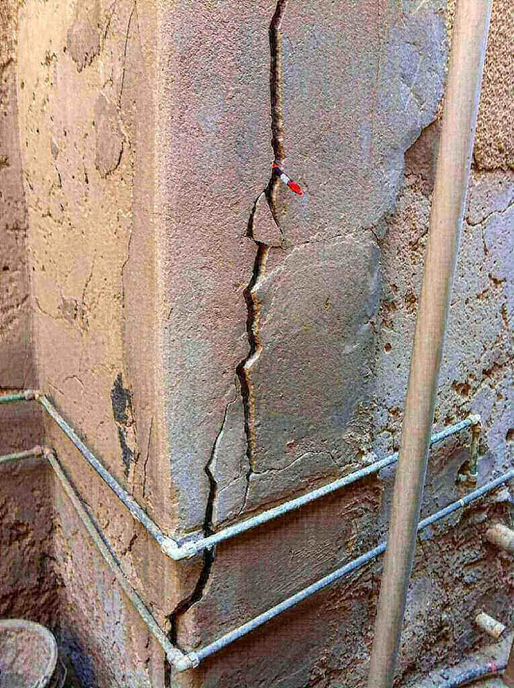
ب) ترک های غیر سازه ای:
این ترک ها بیشتر به دلیل تنشهای داخلی در مصالح ساختمانی رخ میدهند و ایمنی ساختمان را به خطر نمیاندازند، اما ممکن است ناخوشایند به نظر برسند یا ممکن است تصوری از کار معیوب یا احساس ناپایداری در سازه ایجاد کنند. در برخی مواقع به دلیل نفوذ رطوبت از طریق این ترک ها، ممکن است پوشش داخلی ساختمان تخریب شود و در نتیجه بر هزینههای نگهداری اضافه کرده و یا آرماتورها را خورده و در درازمدت بر پایداری سازه تأثیر منفی بگذارد.
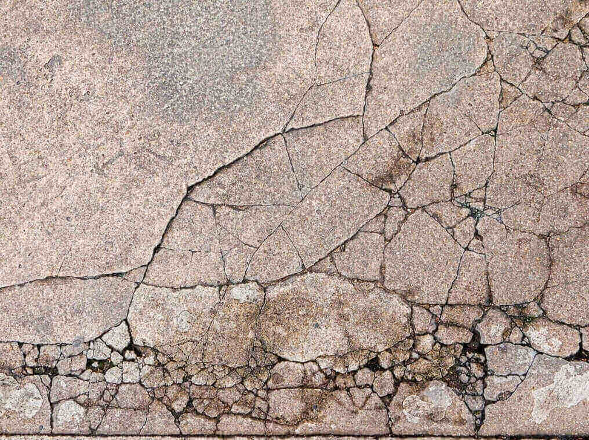
2- طبقه بندی ترک ها از نظر عرض ترک:
ترک ها ممکن است در مرحله اولیه یا با گذشت زمان در سازه ظاهر شوند. برخی از ترک ها در ساختار اجتناب ناپذیر هستند و در معرض سؤالات متعددی قرار دارند.
ترک ها ممکن است به طور قابل ملاحظه ای از نظر عرض متفاوت باشند، از ترک موی بسیار نازک که به سختی با چشم غیرمسلح قابل مشاهده است (حدود 0.01 میلی متر عرض) تا ترک های خالی با عرض 5 میلی متر یا بیشتر.
ترک بر اساس عرض آن را می توان به صورت زیر طبقه بندی کرد:
الف) ریز یا مویی
عرض کمتر از 1 میلی متر
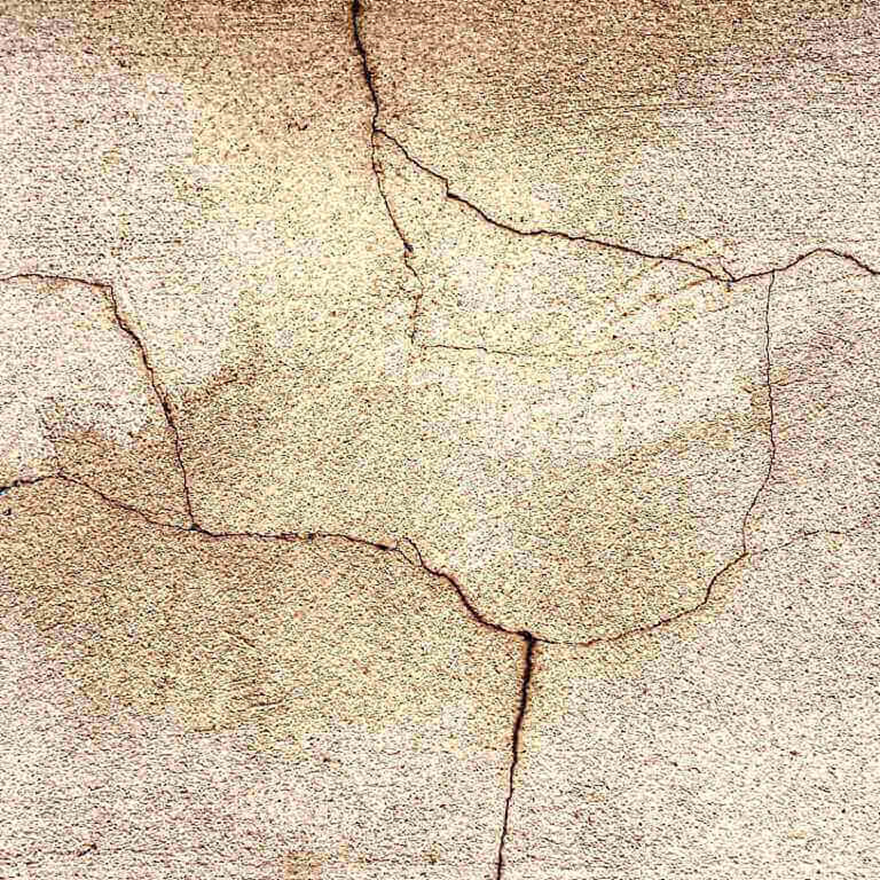
ب) ترک متوسط:
عرض 1 تا 2 میلی متر
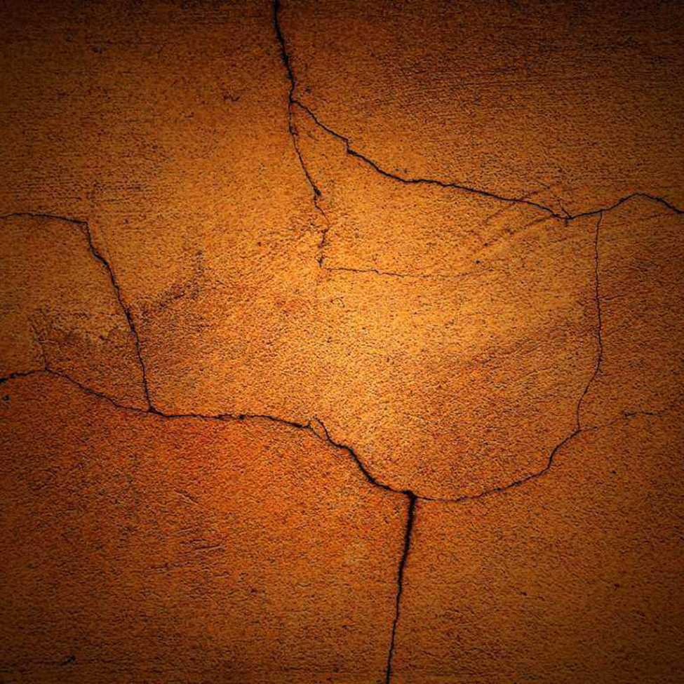
ج) ترک پهن:
عرض بیش از 2 میلی متر
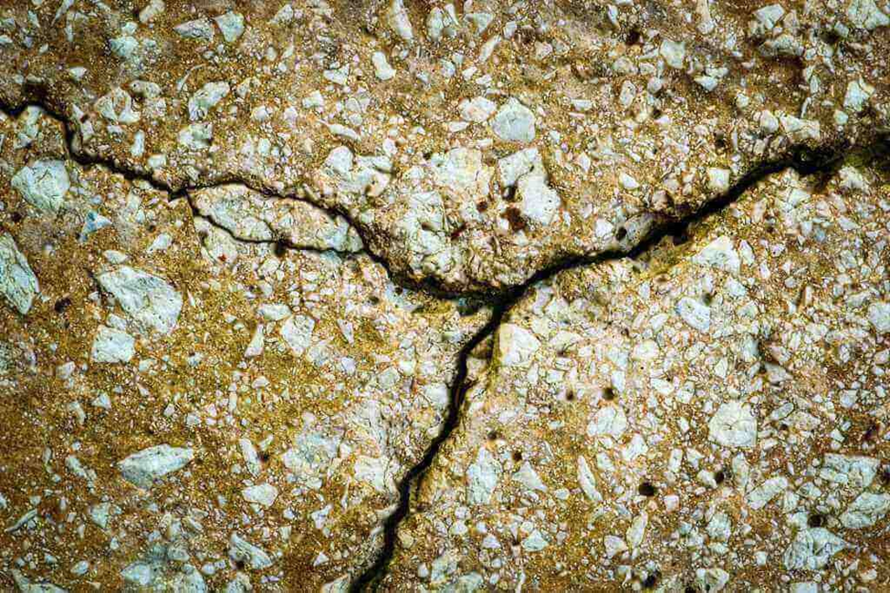
د) کریزینگ:
بروز ترک های ریز با فاصله نزدیک در سطح بتن را کریزینگ می گویند.
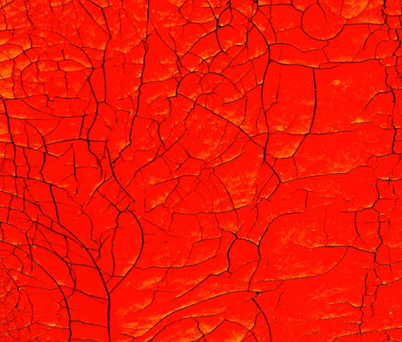
3- طبقه بندی ترک ها از نظر شکل:
ترک ها ممکن است به طور قابل ملاحظه ای از نظر عرض متفاوت باشند، از ترک موی بسیار نازک که به سختی با چشم غیرمسلح قابل مشاهده است تا ترک شکاف. برعکس، ترکها میتوانند در سرتاسر عرض یکنواخت داشته باشند یا ممکن است در یک انتها باریک باشند و به تدریج در انتهای دیگر پهن شوند.
ترک بسته به شکل آن را می توان به صورت زیر طبقه بندی کرد:
الف) ترک سر راست:
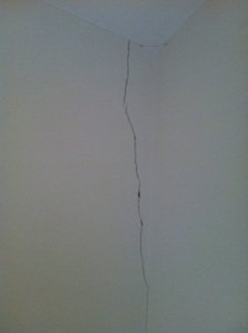
ب) ترک دندانه دار:
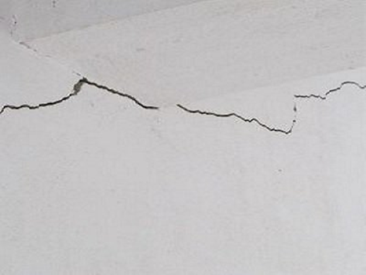
ج) ترک پله ای:
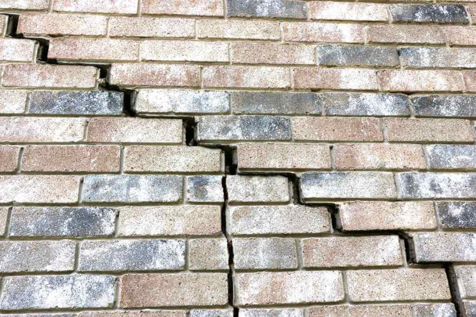
د) ترک دارای الگو:
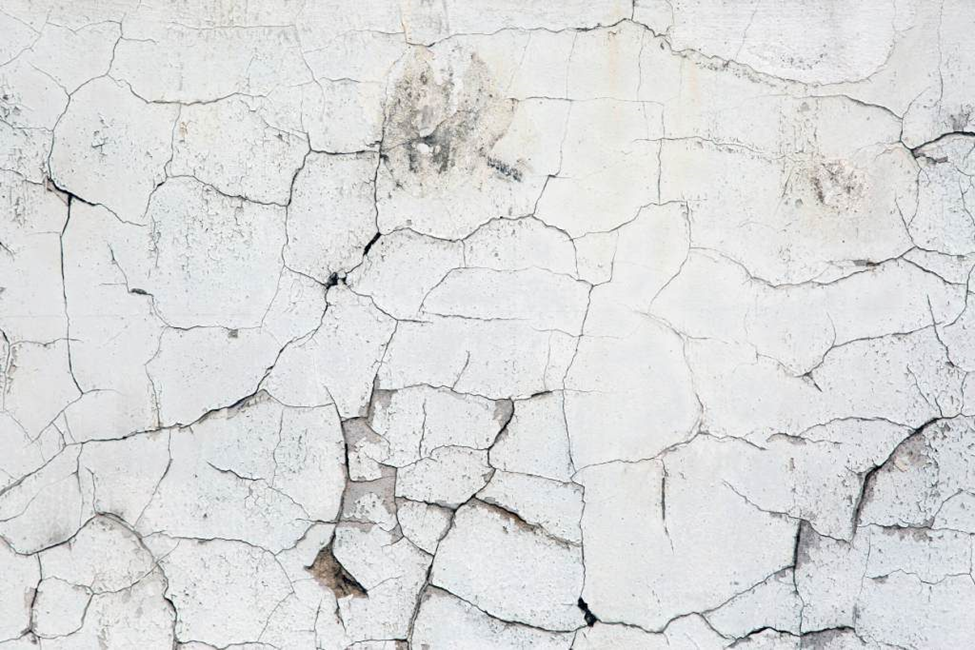
ه) عمودی، افقی یا مورب:
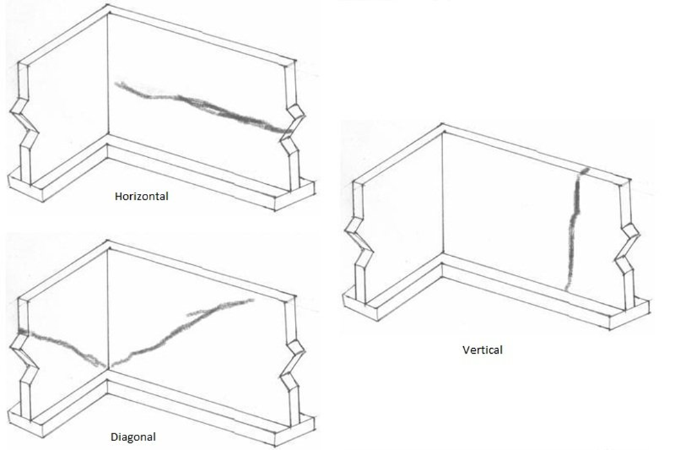
ترک ها ممکن است فقط در سطح باشند یا ممکن است به بیش از یک لایه مواد مانند رنگ، گچ، دیوارها گسترش یابند.
ترکهای ناشی از علل مختلف دارای ویژگیهای متفاوتی هستند که با مشاهده دقیق این ویژگیها میتوان علت ایجاد ترک را برای اتخاذ اقدامات اصلاحی مناسب تشخیص داد.
محصولات مرتبط استرامیکس (شرکت بسپار بتن ایرانیان هوشمند):
Strucure SW50: کیورینگ بتن (عمل آورنده بتن) بر پایه آب
Strutop RM450: ملات ترمیمی الیاف دار سازه ای ویژه بتن کاسماتیک
Strusin N515: ابر روان کننده بتن و کاهنده شدید آب نرمال بتن بر پایه پلی کربوکسیلات اتر اصلاح شده
بهترین مطالب هر ما
ارسال میشه به صندوق پستی شما!
این بالا کلیک کن و ایمیلت رو بنویس
ثبت